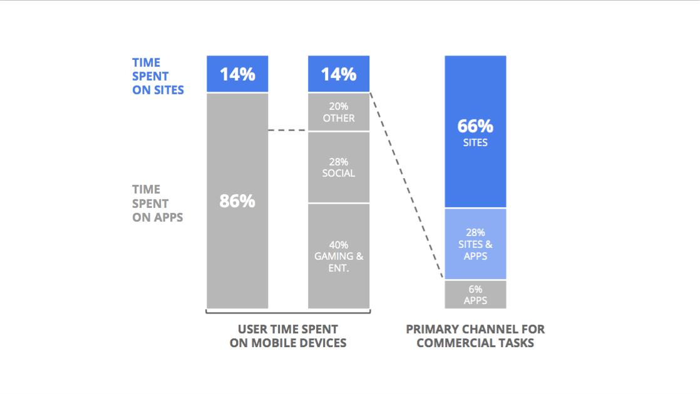

QCon SF 2015
En sammanfattning
Av Alexi Rahman
Vad är QCon?
"QCon is designed for technical team leads, architects, engineering directors, and project managers who influence innovation in their teams."
- London, São Paulo, Beijing, New York, Rio de Janeiro, Shanghai & San Francisco
- InfoQ (http://www.infoq.com/)
- Floyd Marinescu
- The Server Side (http://www.theserverside.com/)
Schema
3 dagar - dragningar
(2 dagar - workshops)
- Microservices
- Containers / Docker
- JavaScript
- Stora datamängder /
skalbarhet - Stream processing
60%

+
- Bredden
- Inte för stor
- Slides lades online snabbt
- San Francisco
- Amerikanarna
-
- Ingen "kioskvältare"
- Inte helt billig
- Presentationerna dröjer online
=
2 stjärnor, "Excellent cooking, worth a detour"
Dragning 1
Redefining Failure at Yammer - Nate FinkParalleler till
+
?
Vi vet inte var vi är på väg, men vi får mycket gjort
Rörlig måltavla
"Failure is not trying things that don’t work.
Failure is failing to learn."
Recept
Deliver frequently
Continuous integration
Continous delivery
Measure impact
Mät allt
Se upp med mikrooptimering
Experiment more, plan less
A/B-testning
Organize for adaptation
Dynamiska team, organiserade kring projekt
Minimera motståndet till förändring...
Är det OK att prova?
“The only sustainable source of competitive advantage in any industry is the ability to learn faster than your competitors.”
Arie DeGeus
Hur fungerar detta på mitt nuvarande uppdrag?
Deliver frequently

Measure impact
Experiment more, plan less
Organize for adaptation
Potentiella problem
Ägarskap
Dragning 2
The Future of The Web Platform: Does It Have One? - Alex RussellWebben (mobil + desktop)
Hade en lysande framtid framför sig...Innan apparna kom
Några nackdelar med appar?
Kommersiellt
Distribution
Varför inte webb?
- Dåliga webbsidor
- Avsaknad av viktig funktionalitet
Viktig funktionalitet
- Tillgång till hemskärmen
- Pushnotifikationer
- Offline
Service workers!
Vad är service workers?
- Skript som körs i bakgunden i browsern, separat från webbsidan som initierade det
- Har hand om t ex nätverkstrafik
Har i sitt API "fetch" samt "push"
Registrera
if ('serviceWorker' in navigator) {
navigator.serviceWorker.register('/service-worker.js');
}
Installera samt cacha
function updateCache() {
return caches.open('some-cache-name)
.then(function (cache) {
return cache.addAll([
'/offline-page.html',
'/assets/css/main.css',
'/assets/js/main.js'
]);
});
};
self.addEventListener('install', function (event) {
event.waitUntil(updateCache());
});
Hämta innehåll från cache alt. nätverket
self.addEventListener('fetch', function (event) {
event.respondWith(
caches.match(event.request)
.then(function(response) {
if (response) {
return response;
}
return fetch(event.request);
}
)
);
});
The Guardian
Kanske går det att vända trenden
Slut
Frågor?
Andra bra dragningar
NOSQL WITH CACHING, SEARCH AND REAL-TIME ANALYTICS - James GorlickSCAMMERS, HACKERS, AND FRAUD ON THE BLOCKCHAIN - Olaf Carlson-Wee
IS IT POSSIBLE TO RUN A 100% REMOTE TEAM? - Jeremy Edberg
DINO DNA! HEALTH IDENTITY FROM THE WRIST @JAWBONE - Brian Wilt